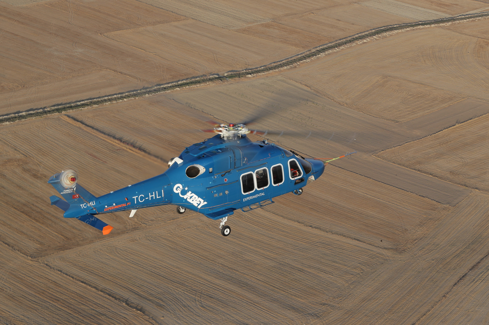
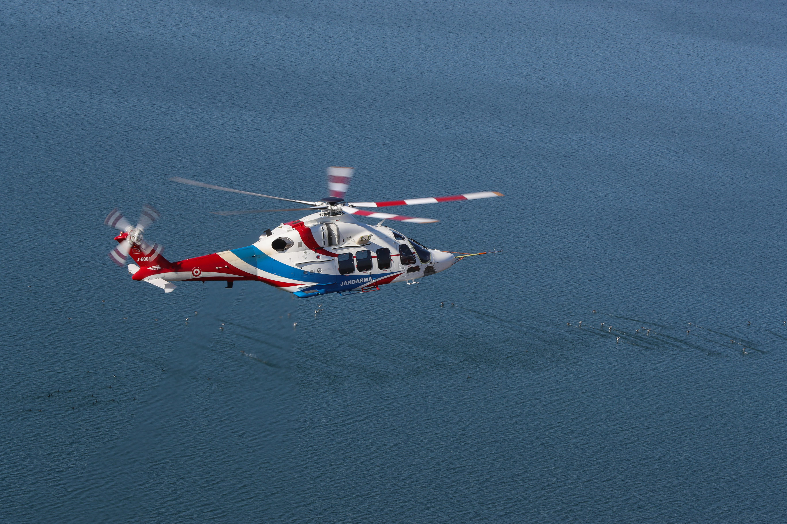
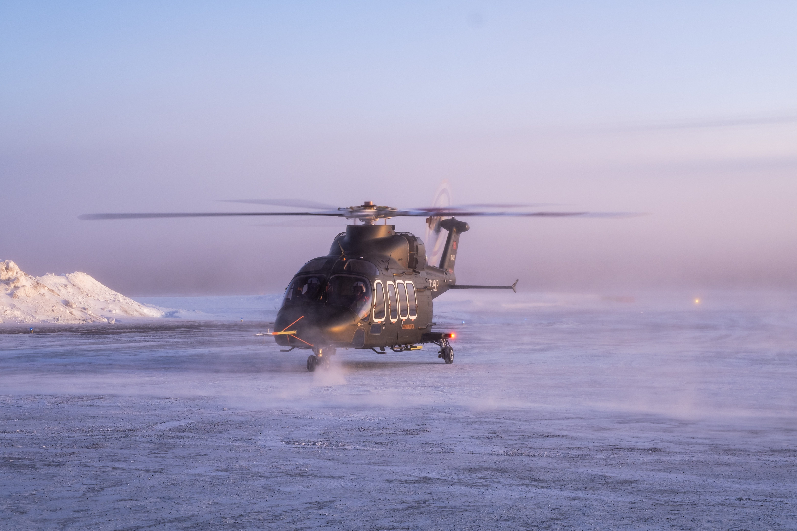

❮
❯
Türk Havacılık ve Uzay Sanayii tarafından geliştirilen, çok rollü genel maksat helikopteri.
T625 GÖKBEY, TUSAŞ tarafından geliştirilen çok rollü genel maksat helikopteridir. Platform; sivil ve askerî kullanıcılar için geniş kabin hacmi, yüksek faydalı yük kapasitesi ve farklı görev profillerine uyarlanabilen yapısıyla tasarlanmıştır.
TUSAŞ, GÖKBEY’in VIP taşıma, kargo taşıma, hava ambulans, arama-kurtarma ve offshore taşıma görevlerinde kullanılabileceğini belirtmektedir. Helikopterin gece ve gündüz, zorlu iklim ve coğrafya koşullarında görev yapabilmesi hedeflenmiştir.
Program kapsamında helikopterin ilk uçuşu 6 Eylül 2018’de gerçekleştirildi; daha sonra 20.000 ft servis tavanına ulaşan testler ve teslimatlar kamuoyuna duyuruldu.



| Platform Sınıfı | Çok rollü genel maksat helikopteri |
| Üretici | TUSAŞ / Turkish Aerospace |
| Görev Rolleri | VIP taşıma, kargo taşıma, hava ambulans, arama-kurtarma, offshore taşıma |
| Mürettebat | 2 |
| Yolcu Kapasitesi | 12 |
| Toplam Kabin Düzeni | 2 mürettebat + 12 yolcu |
| Uzunluk | 15.87 m |
| Yükseklik | 4.42 m |
| Ana Rotor Çapı | 13.20 m |
| Azami Kalkış Ağırlığı | 6050 kg |
| Motor Sayısı | 2 |
| Motor Tipi | LHTEC CTS800-4AT-2A turboşaft |
| Motor Gücü | 2 × 1014 kW / 2 × 1360 shp |
| Azami Hız | 306 km/s |
| Menzil | 740 km |
| Havada Kalış | 3.8+ saat |
| Tırmanma Oranı | 6.1 m/sn |
| Servis Tavanı | 20.000 ft |
| Uçuş Koşulları | Gece ve gündüz görev icrası |
| Operasyon Yeteneği | Zorlu iklim ve coğrafya koşullarında, yüksek irtifa ve sıcaklıkta görev yapabilme |
| Kabin Özelliği | Geniş kabin hacmi |
| Faydalı Yük Özelliği | Yüksek faydalı yük kapasitesi |
| Aviyonik Yaklaşımı | Gelişmiş aviyonikler ve kullanıcı odaklı tasarım |
| Kullanıcı Profili | Sivil ve askerî kullanıcılar |
| Program Durumu | Test, sertifikasyon ve teslimat süreci kamuya açık şekilde duyurulmuştur |
| İlk Uçuş | 6 Eylül 2018 |
| Öne Çıkan Özellik | Yerli genel maksat helikopteri olarak geniş kabin, yüksek faydalı yük ve çok görevli kullanım kombinasyonu |